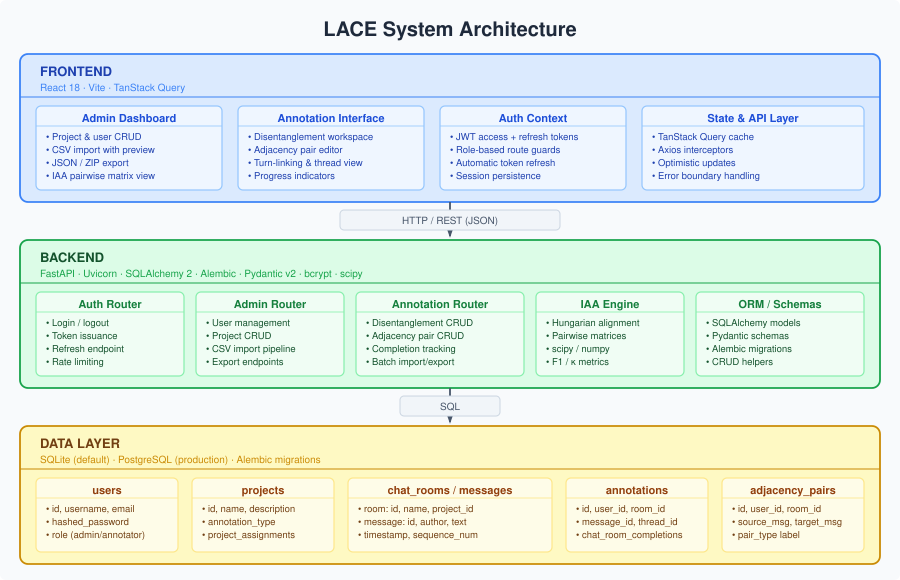

Architecture¶
System Overview¶
LACE is a three-tier web application. The diagram below shows the high-level structure.

Tiers¶
Frontend — React SPA¶
| Concern | Technology |
|---|---|
| UI framework | React 18 |
| Build tool | Vite |
| Server-state cache | TanStack Query v5 |
| HTTP client | Axios with interceptors |
| Routing | React Router v6 |
The SPA is compiled to static assets and served by Nginx (Docker) or vite preview (development). Two workspaces are provided:
- Admin Dashboard — project creation, user management, CSV import with row-level preview, JSON/ZIP export, IAA pairwise matrix viewer.
- Annotation Interface — chat-style view for disentanglement (thread colour assignment) or adjacency pair drawing (drag/right-click directed links).
Authentication state lives in a React context: the access token is stored in memory; the httpOnly refresh-token cookie is used to obtain new tokens silently. Role-based route guards block annotators from admin endpoints.
Backend — FastAPI¶
| Concern | Technology |
|---|---|
| Framework | FastAPI 0.110+ |
| ASGI server | Uvicorn |
| ORM | SQLAlchemy 2 |
| Migrations | Alembic |
| Schema validation | Pydantic v2 |
| Password hashing | bcrypt via passlib |
| Numerical computation | scipy, numpy |
The API under /api/v1/ is split into four routers:
- Auth — login, logout, token refresh, rate limiting.
- Admin — CRUD for users and projects; CSV parsing and bulk import; JSON/ZIP export.
- Annotation — read/write for disentanglement threads and adjacency pairs; room completion.
- IAA — on-demand pairwise F1 and Cohen's κ using the Hungarian algorithm.
Data Layer¶
LACE defaults to SQLite for zero-configuration local use and supports PostgreSQL for production. Schema changes are managed via Alembic migrations; no manual DDL is required.
Database Schema¶
| Table | Purpose |
|---|---|
users |
Credentials, hashed passwords, role (admin / annotator) |
projects |
Project metadata, annotation type (disentanglement / adjacency) |
project_assignments |
Many-to-many join between users and projects |
chat_rooms |
Individual conversation units within a project |
chat_messages |
Ordered turns within a chat room (author, text, reply link) |
disentanglement_annotation |
Maps each message to a thread ID per annotator |
adj_pairs_annotation |
Directed typed edge between two messages per annotator |
chat_room_completions |
Tracks which annotator has marked which room as complete |
IAA — Hungarian Algorithm¶
Inter-annotator agreement for disentanglement is non-trivial: two annotators may identify the same threads but assign them arbitrary different IDs. LACE resolves this via optimal thread alignment:
- For each annotator pair (A, B) on a room, collect all thread labels assigned by each.
- Build a cost matrix C where C[i][j] = 1 − F1(thread i of A, thread j of B).
- Run
scipy.optimize.linear_sum_assignmenton C to find the bijective mapping maximising total F1. - Compute macro-average F1 across matched thread pairs as the room-level score.
- Aggregate room scores into a project-level pairwise matrix.
Cohen's κ is computed at the message level (using the aligned thread label as the nominal category) to provide a chance-corrected agreement measure.
Code Layout¶
annotation-backend/
├── app/
│ ├── api/ # FastAPI routers — routing, validation, HTTP responses
│ │ ├── auth.py
│ │ ├── admin.py
│ │ ├── annotations.py
│ │ └── adjacency_pairs.py
│ ├── models.py # SQLAlchemy ORM models
│ ├── schemas.py # Pydantic v2 request/response models
│ ├── crud.py # All database access functions
│ ├── auth.py # JWT logic and password hashing
│ ├── config.py # pydantic-settings configuration
│ └── main.py # Application factory, middleware, router registration
└── alembic/ # Database migrations
annotation_ui/
├── src/
│ ├── components/ # Reusable UI components
│ ├── pages/ # Route-level views (Admin, Annotation workspaces)
│ ├── hooks/ # TanStack Query data-fetching hooks
│ └── api/ # Axios client and endpoint wrappers
└── vite.config.ts
conversion_tools/ # Excel/CSV batch-import utilities
Docker Deployment¶
┌─────────────────────────────────────────────────────┐
│ Docker Compose │
│ │
│ ┌──────────────┐ ┌──────────────────────────┐ │
│ │ nginx │────▶│ annotation_ui │ │
│ │ :80 / :443 │ │ (static build, :3000) │ │
│ └──────┬───────┘ └──────────────────────────┘ │
│ │ /api/* │
│ ▼ │
│ ┌──────────────┐ ┌──────────────────────────┐ │
│ │ backend │────▶│ db (PostgreSQL :5432) │ │
│ │ uvicorn :8000│ │ or mounted SQLite file │ │
│ └──────────────┘ └──────────────────────────┘ │
└─────────────────────────────────────────────────────┘
Nginx terminates TLS and reverse-proxies /api/* to the backend container. Alembic migrations run automatically at container start via entrypoint.sh before Uvicorn launches.